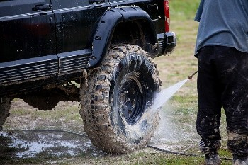

Weather Summary
Currently:°F,
High: °F
Wind Chill:
Humidity: %
Wind Speed: mph
5 day forcast
°F |
°F |
°F |
°F |
°F |
Palmers open Spit Shine on North State
Scott Palmer likes cars and he likes them shiny and clean. Banking on the idea that
others feel the same way, he and his wife, Kim, decided to build Spit Shine, a new, state of the art car
wash in Preston.
Their first customer, Joe Ward, came during a snowstorm on April 1, to try it out and since then, the
place has kept busy, said Scott.
“People have been good to us,” he said. The facility has been something he has been thinking about for
years, said Kim.
Not only does it offer self-serve manual bays, but it offers soft touch as well as no-touch automatic
bays. Another feature unique to this establishment is “mud guns,” which are adjustable high-pressure
wands designed to part vehicles from muddy encrustations.
Air driers — a feature bike riders enjoy — are also nice on windows, said the Palmers, and vacuum
stations are stationed just outside the bays. Finally, in an increasingly cashless society, this car
wash has the option to operate on credit cards, said Kim.
One of the two is usually at the car wash, cleaning the bays, dumping garbage, or visiting with
customers.
Spit Shine is the first phase of a commercial block Palmers are developing at this North State Street
location in Preston. When completed, there will be room for about a dozen businesses there, he said.
By
NECIA P. SEAMONS Citizen editor Jul 1, 2020
Contact Us
27 N. State Street
Preston, Idaho 83262
☎ 208.598.6874
✉ contact@weatherwonder.com